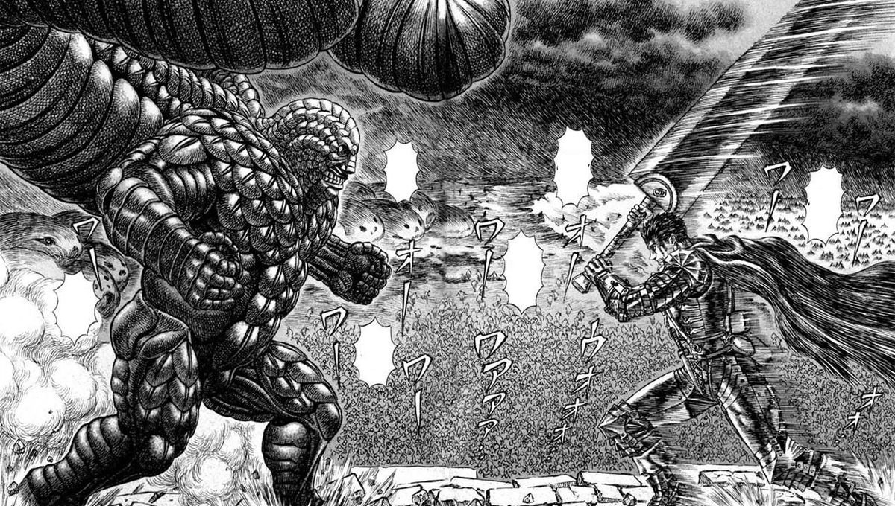
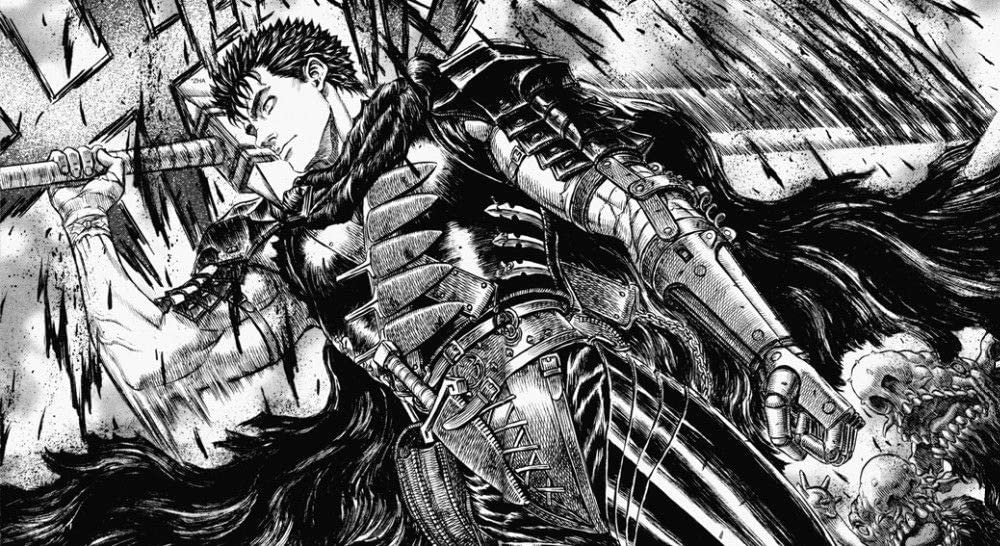
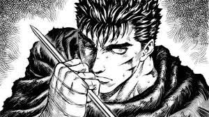
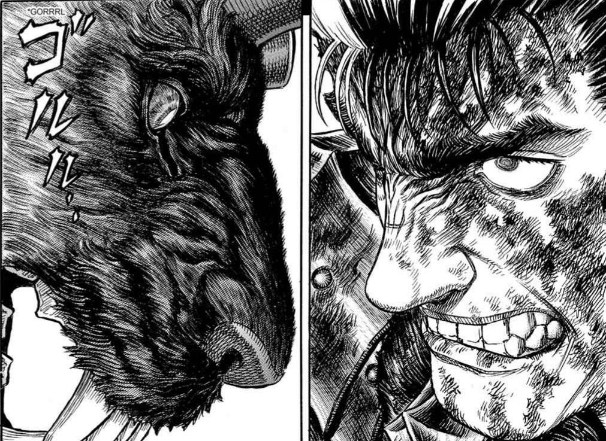

How Berserk Came To Be Part 1
Berserk (Japanese: ベルセルク, Hepburn: Beruseruku) is a Japanese manga series written and illustrated by Kentaro Miura. Set in a medieval Europe-inspired dark fantasy world, the story centers on the characters of Guts, a lone mercenary, and Griffith, the leader of a mercenary band called the "Band of the Hawk".
Berserk Home Page
Welcome to the Unoffical Berserk home page! Here is where you can learn more about the site and A little bit of information about the mange and the anime.
HomeBerserk Gallery Page
Welcome to the unoffical Berserk Gallery page! Here you can see some of the offical manga pages and the art work for them.
AboutBerserk About Page
Welcome to the Berserk Unoffical About page! Here is were you'll learn about the manga and the anime. This will also include the creator of the show and the year it was made!
Gallery